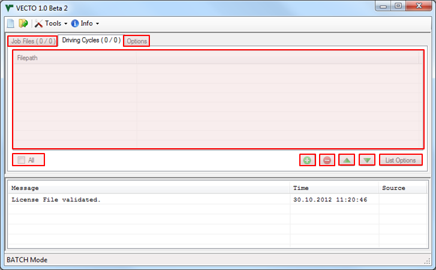

User Manual
Main Form
/ Driving Cycles Tab

Cycle List
Driving cycle files (.vdri) listed here will be used for calculation in BATCH mode. Unchecked files will be ignored!
All
(Un-)Check all files in Cycle List
Add files to Job List
...using the VECTO File Browser
Remove selected files from Cycle List
Move selected files up or down in Cycle List
List Options
Save/Load List
Save or load the Cycle List to text file (using the VECTO File Browser)
Load Autosave-List
The Autosave-List is saved automatically on application exit and calculation start
Clear List
Remove all files from the Cycle List
Remove Paths
Remove paths, i.e. only file names remain using the Working Directory as source path.
Contact